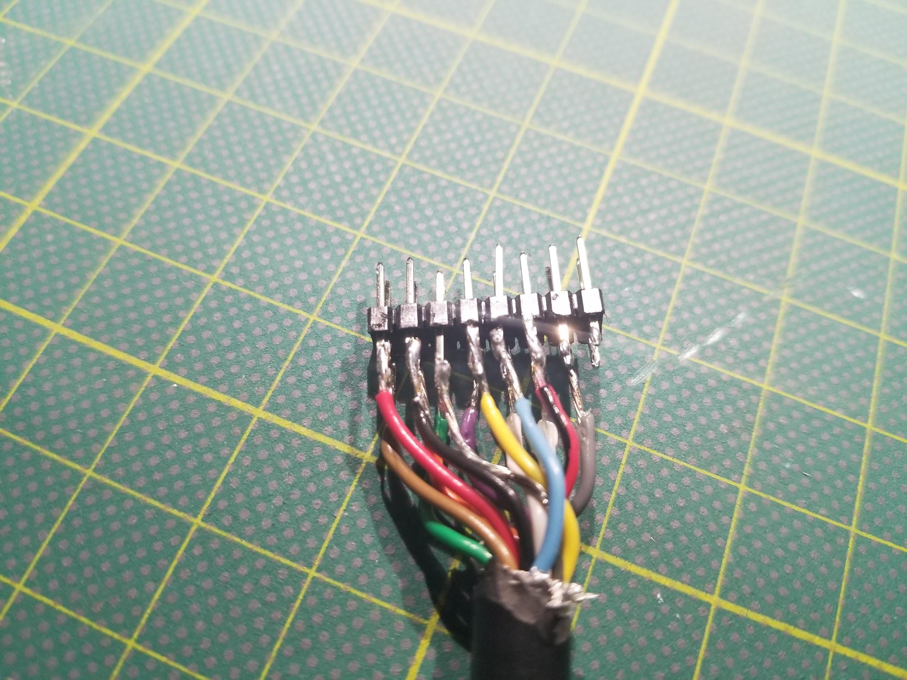

TL;DR: The first computer I programmed was an Atari 800. I'm using a Raspberry Pi Zero W and a simple serial voltage conversion circuit to load disk images from the internet onto my Atari 800.
I’ve written before about my first contact with computers. But, man, I wrote that back in 2003. Long enough to make the itself post a retro artifact. The passage of time is weird.
If you don't care to follow me down memory lane so much, go ahead and skip on down to where I start building the gadget.
Atari was my first love
To recap: I was a problematic kid - hyperactive and easily bored. I recall literally climbing the walls by way of the classroom curtains. At some point, the principal decided I needed a challenge. He plonked me down in front of an Atari 800 and a stack of books.
I burned through those books and fell in love with computers. Typed in programs & games. Found out how old I’d be in The Year 2000 - which, back then, was The Future. I learned how programming worked. Computers expanded to fill my head, gave outlet to my spastic energy.
The problem was that I only had one hour per day with the machine at school. We didn’t have a computer at home. That didn’t keep me from picking up every computer book I could get my hands on at the book fair when it came through, though. I’d read through the programs and try to figure out how they worked while I waited until I could get some time at a keyboard to type them in.

I even remember playing with a Lite Brite and trying to work out how to translate those pictures to Atari graphics. That frustrated me, of course, because those old-school Lite Brites had a hexagonal layout of pegs rather than a square grid that could directly translate to pixels.
But, then, Commodore
That Christmas - or maybe the next - I got a Commodore 64 under the tree. My story with computers accelerated, because I had the thing all to myself in my bedroom. I left Atari behind, learned about the SID chip but never explored the POKEY.

The computer lab in my office
Decades later, I hit up eBay for an Atari 800. I found one at a decent price - complete with an Atari 1050 floppy, 1010 cassette drive, and a pile of disks and tapes and cartridges. I played with it a little, but mostly it sat as an office decoration for a few years.
This year, I decided to do something with all my old machines. I’ve got a small collection in my home office: Commodore 64, Amiga 1200, Apple IIe, and Atari 800 - all personal touchstones. But, as it happens, floppies and cassettes and rubber belts decay. I discovered that some of this stuff stopped working over the years.

Hacking the SIO port
The core machines still work, though. And, thanks to the internet and folks generous with their time & efforts, enormous archives of software for these systems can be accessed in seconds. But, how do you get this software into these archaic systems?
I thought bridging the gap would be hard. But, a bit of cheap modern kit can twiddle the signals on an old-school input/output port such that an antique thinks it’s talking to something of its own vintage. Single-board computers and microcontrollers are capable enough to pretend to be almost anything to these old machines.

That brings me to the SIO port on the Atari 800. Where most 80s computers had a handful of parallel & serial ports of proprietary & standard flavors - the Atari 8-bit computers had just this one port for talking to disks, cassettes, printers, modems, or whatever. If that sounds familiar, the SIO port could be considered a predecessor to our modern USB port. Oddly enough, Joseph C. Decuir worked on both technologies, so I think the similarity is more than coincidental.
In my idle googling on how to get new data piped into my old Atari, I found this 2013 post on AtariAge entitled "SIO2PI -> Raspberry Pi as a floppy" by TheMontezuma.
In that post is a simple circuit: It used a logic level voltage converter, a diode, a Raspberry Pi, and some wires. I didn’t really know all that much about voltage levels and serial ports before this, but this seems handy for all kinds of things and well within my ability to build.

Of course, there’s something ludicrous about using a Raspberry Pi for this. That little thing can emulate an entire Atari 800 on its own. You could hollow out the guts of the old computer, drop in the Pi, and with some clever wiring you’d probably never know the difference from the outside. Some people actually do that with classic computers like the Amiga.
But, I really wanted to get this particular machine up and running. And, overpowered as it might be for the task, a Raspberry Pi Zero W is also hilariously inexpensive.
Building the SIO2Pi
So, I went shopping and picked up some parts:
CanaKit Raspberry Pi Zero W (Wireless) Starter Kit with Official Case
Logic Level Converter Bi-directional Shifter Module for Arduino
I had a spare SIO cable that I cut in half for the project. I could have tried getting a new SIO connector 3D printed - and I still might - but I knew this cable already worked. And, I was impatient. My first prototype came together on a little breadboard.


My first attempt at using the thing was a failure. But, I did more reading into how to configure the Raspberry Pi’s serial UART. Two needful things came up:
Disabling the out-of-box Bluetooth module
Disabling the service running a console on the serial port
So, heads up if you try this - make sure to properly set up the Pi's UART for use with the circuit. Things will either not work at all - or have strange corruption issues as a Linux login console tries to output along with floppy disk data.
Loading disks with the SIO2Pi
After that, sio2bsd started working and my little rig piped images of Atari floppy disks downloaded from ftp.pigwa.net into my old computer as if they were the real thing.
Oh and since we're living in The Future and the Internet Archive is an awesome place - you can try emulating what I loaded for real, right in your browser. I've had these songs stuck in my head for like a week.
I’ve only spent a couple of hours with this stuff so far, so I’d totally welcome some suggestions for more things to check out. I knew there were games, but I was never aware of a demoscene or music packs on the Atari 8-bit computers. I’m also starting to learn a bit about the differences between members of the old Atari 8-bit family - insofar as not everything runs on the Atari 800.
But, I've also got an Atari 1200XL and an Atari 65XE in the basement that I might try playing with next. I did lay hands on a 1200XL as a kid, but I was already onto Commodore by the time the 65XE arrived. It'll be interesting to see what runs on those things.
The SIO2Pi is a "modem" too!
Then, I discovered that I could run tcpser on the Raspberry PI - and suddenly my pretend disk drive was a pretend modem. I could "dial out" to the internet and explore a neo-retro world of BBSes I’d never had a chance to experience back in the day on an Atari.

Kitten-proofing the SIO2Pi
The little breadboard rig worked pretty well. But, the next morning, I found most of the wires pulled free thanks to a curious kitten. So, I decided to clean things up and make them more permanent with a Perma Proto Bonnet Mini Kit, a 16-pin IDC breakout helper, and some 30AWG wire from Adafruit.
Even though there are only 5 pins needed between the Pi and the SIO port, soldering up all the pins to headers means I never have to remember what gets plugged into where. It's also good soldering practice. There are also 3 unused pins on the header - because SIO is 13 pins but the IDC breakout was convenient enough to use as-is and just ignore the extra connections.
I managed to solder all the SIO cable wires onto header pins as a makeshift male connector to the SIO2Pi Bonnet. It ended up being a mess, often melting the plastic frame of the header, and I had to redo it at least once. But, it works. I’m also considering adding a female header to the other end of the SIO cable I chopped in half, if only to make it easier to join the two halves back into a working cable if I ever need it.

The finished product sits nicely on top of the Atari 800.

The wires might be too thick, but I’m considering some IEC ribbon cable connectors to crimp one onto the end of these wires and replace my rough soldering job. That might be cleaner and fit more naturally into how this sits on my desk, without bending all the wires awkwardly.
Next steps
This setup works well enough. The main drawback is that I have to ssh into the Raspberry Pi and run sio2bsd manually to make it available for loading. And, if I want to switch to using it as a modem from a term program, I have to kill sio2bsd and start up tcpser.
Adding a display or web interface: The Raspberry Pi isn’t hooked up to a monitor - and I don’t really want to devote one to it. I could add some kind of small touchscreen or text display. It would also be nice to have a web interface I could hit from my phone. Maybe use that to select disk images and switch into terminal mode, do all the process management of sio2bsd and tcpser in the background with node.js. So, there’s a project for the future.
Using an ESP8266: I'm toying with the idea of exploring whether an ESP8266 - or some other small board - would be up to snuff for this project. I had fun using one to build my wifi pumpkin, so it could be fun for this too. That would take me learning a lot more about the SIO data protocols, though. Luckily, I have the source code for sio2bsd, so I have a starting point. But, the key to this SIO2Pi project was that I basically just glued things together and they worked without me entirely understanding the parts.
Calling more BBSes & writing my own stuff: Beyond just digging into old software, I’m not sure where I’m going with this stuff next. I’ll probably keep calling some BBSes. I’ve also got a kind of masochistic notion to fetch some old computer magazines and try some of the type-in programs for old time’s sake. Maybe I’ll poke around with exploring the hardware and writing my own games. I haven't tried it, but it seems like this rig should be able to save to disk images, too.
A better case: I could also explore 3D printing a case that combines all this stuff into a tidy little module with an SIO socket (or two for daisy chaining) rather than using a butchered old cable. I've also read about folks embedding this kind of hardware directly into the old computer - but I like this stuff to be easily reversible & non-destructive, so I probably won't try that.
Or, you know, maybe I’ll move on from this serial enthusiasm and let it hang out in my office for a few more years. Either way, it’s been a quick & fun project to revive this old machine and get a look a some new-to-me software that I never had a chance to see back in the day.